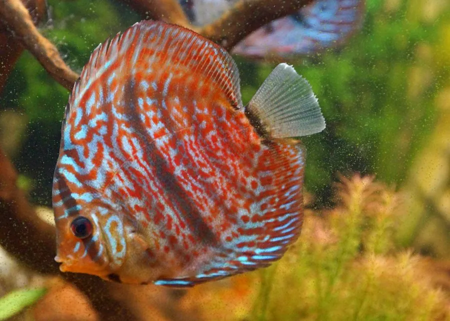

鱼类 · 动物界
七彩神仙鱼 Symphysodon discus

原产亚马孙河流域的圆盘状慈鲷，体侧布满红蓝相间的波浪纹，色彩艳丽，是著名的观赏鱼，亲鱼会分泌“鱼乳”哺育幼鱼。
- 分类
- 门脊索动物门纲硬骨鱼纲目鲈形目科慈鲷科属盘丽鱼属
- 栖息环境
- 亚马孙河流域的缓流河段、湖泊和泛滥林，喜弱酸性软水
- 地理分布
- 南美洲亚马孙河流域，包括巴西、秘鲁和哥伦比亚，全球广泛人工饲养
- 保护级别
- 暂无评估；中国未列入国家重点保护野生动物名录（观赏鱼）
物种志
七彩神仙鱼体呈圆盘形、侧扁，背鳍和臀鳍高大，尾鳍呈扇形。体色以红、蓝、绿、黄为主，体侧布满波浪状或网状的彩色条纹，不同品种的差别极大。成鱼体长一般 15–20 cm，连鳍高可达 20 cm 以上，因体形圆如盘子而得名“盘丽鱼”。
七彩神仙鱼原产南美洲亚马孙河流域，主要分布在巴西、秘鲁和哥伦比亚的缓流河段、湖泊和泛滥林。它喜欢弱酸性软水，适宜水温 26–30 ℃，是典型的“娇气”观赏鱼，对水质变化十分敏感。它是杂食性鱼类，吃水生昆虫、甲壳类、藻类和有机碎屑。繁殖方式在鱼类中很罕见：亲鱼在平整的岩石或叶片上产卵，孵化后幼鱼会吸食亲鱼体表分泌的黏液，俗称“鱼乳”。七彩神仙鱼是著名的观赏鱼，人工培育出蓝钻、红点、蛇纹等大量品系，在水族爱好者中被称为“观赏鱼之王”。目前它没有IUCN 的正式评估，中国未将其列入国家重点保护野生动物名录。
形态与习性
- 食性杂食性，吃水生昆虫、甲壳类、藻类和有机碎屑
- 体长成鱼体长 15–20 cm，连鳍高可达 20 cm 以上
- 繁殖亲鱼在岩石或叶片上产卵，幼鱼吸食亲鱼分泌的“鱼乳”
- 水温适宜水温 26–30 ℃，喜弱酸性软水
- 产地亚马孙河流域的缓流河段、湖泊和泛滥林
- 品系人工培育出蓝钻、红点、蛇纹等大量观赏品系
趣味知识
- 七彩神仙鱼的幼鱼会吸食亲鱼体表分泌的黏液，这种“鱼乳”哺育在鱼类中十分罕见。
- 它的体形圆如盘子，加上艳丽的色彩，被称为“观赏鱼之王”。
- 野生七彩神仙鱼生活在亚马孙河弱酸性的软水中，对水质非常敏感。